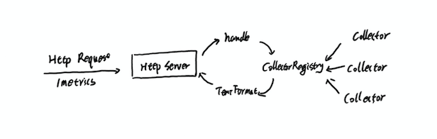
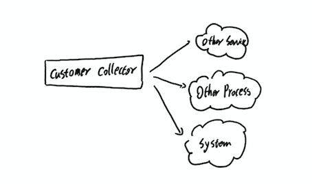

client_java
为了方便用户集成，Prometheus提供了多种Client Library。通过这些Client Library用户可以创建自定义的Exporter程序，也可以直接在业务系统中集成对Prometheus的支持。 这一小节中，我们将学习如何使用Prometheus官方提供的client_java创建Exporter程序。
这部分我们将带领读者学习Prometheus社区提供的client_java（Github地址）的基本用法，并基于它实现一个简单的Exporter程序。
初识client_java
你可以根据自己的喜好使用Maven或者Gradle创建应用程序，在本书中将以Gradle为例。
添加Prometheus client_java依赖包，在build.gradle中添加依赖，如下：
# 省略其它gradle配置
dependencies {
compile "io.prometheus:simpleclient:0.3.0"
compile "io.prometheus:simpleclient_hotspot:0.3.0"
compile "io.prometheus:simpleclient_httpserver:0.3.0"
compile "io.prometheus:simpleclient_pushgateway:0.3.0"
}
其中simpleclient是对Prometheus集成的核心依赖，simpleclient_hotspot是对Hotspot JVM相关监控数据采集的实现。simpleclient_httpserver中提供的一个简单的能够处理Prometheus监控请求的HTTP服务器实现。simpleclient_pushgateway则提供了与PushGateway的对接支持。
使用simpleclient_http创建一个简单的HTTPServer。
package com.github.prometheus.samples;
import io.prometheus.client.exporter.HTTPServer;
import io.prometheus.client.hotspot.DefaultExports;
import java.io.IOException;
public class Server {
public static void main(String[] args) throws IOException {
DefaultExports.initialize();
new HTTPServer(1234);
}
}
运行main函数，并且访问http://localhost:1234/metrics，可以在网页中看到以下内容。
# HELP jvm_info JVM version info
# TYPE jvm_info gauge
jvm_info{version="1.8.0_51-b16",vendor="Oracle Corporation",runtime="Java(TM) SE Runtime Environment",} 1.0
# HELP jvm_gc_collection_seconds Time spent in a given JVM garbage collector in seconds.
# TYPE jvm_gc_collection_seconds summary
jvm_gc_collection_seconds_count{gc="PS Scavenge",} 0.0
jvm_gc_collection_seconds_sum{gc="PS Scavenge",} 0.0
jvm_gc_collection_seconds_count{gc="PS MarkSweep",} 0.0
jvm_gc_collection_seconds_sum{gc="PS MarkSweep",} 0.0
# HELP jvm_buffer_pool_used_bytes Used bytes of a given JVM buffer pool.
# TYPE jvm_buffer_pool_used_bytes gauge
jvm_buffer_pool_used_bytes{pool="direct",} 8192.0
jvm_buffer_pool_used_bytes{pool="mapped",} 0.0
恭喜你，已经成功完成了你的第一个Exporter程序。这里返回的是当前应用中JVM相关的监控指标，包括JVM中GC，Memory Pool，JMX, Classloading，以及线程数等监控统计信息。
client_java的实现过程
查看DefaultExports.initialize()中的实现代码，可以看到类似于如下代码：
public class DefaultExports {
private static boolean initialized = false;
public static synchronized void initialize() {
if (!initialized) {
new StandardExports().register();
new MemoryPoolsExports().register();
new BufferPoolsExports().register();
new GarbageCollectorExports().register();
new ThreadExports().register();
new ClassLoadingExports().register();
new VersionInfoExports().register();
initialized = true;
}
}
}
这里所有的Exporters都继承自Collector，并且实现collect()方法，用于返回该Collector中获取到的所有监控指标和样本数据。而register()方法，会将该Collector自己注册到CollectorRegistry.defaultRegistry中。
HTTPServer中则创建了一个HTTPMetricHandler用于来处理Prometheus抓取监控样本数据的请求：
server = HttpServer.create();
server.bind(addr, 3);
HttpHandler mHandler = new HTTPMetricHandler(registry);
server.createContext("/", mHandler);
server.createContext("/metrics", mHandler);
executorService = Executors.newFixedThreadPool(5, DaemonThreadFactory.defaultThreadFactory(daemon));
server.setExecutor(executorService);
start(daemon);
HTTPMetricHandler主要负责响应Prometheus Server向该Exporter发起的请求。通过从CollectorRegistry.defaultRegistry中所有的Collector实例的collect()方法中获取样本数据，并对样本数据进行格式化，从而将监控样本返回给Prometheus Server:
public void handle(HttpExchange t) throws IOException {
String query = t.getRequestURI().getRawQuery();
ByteArrayOutputStream response = this.response.get();
response.reset();
OutputStreamWriter osw = new OutputStreamWriter(response);
TextFormat.write004(osw,
registry.filteredMetricFamilySamples(parseQuery(query)));
osw.flush();
osw.close();
response.flush();
response.close();
t.getResponseHeaders().set("Content-Type",
TextFormat.CONTENT_TYPE_004);
t.getResponseHeaders().set("Content-Length",
String.valueOf(response.size()));
if (shouldUseCompression(t)) {
t.getResponseHeaders().set("Content-Encoding", "gzip");
t.sendResponseHeaders(HttpURLConnection.HTTP_OK, 0);
final GZIPOutputStream os = new GZIPOutputStream(t.getResponseBody());
response.writeTo(os);
os.finish();
} else {
t.sendResponseHeaders(HttpURLConnection.HTTP_OK, response.size());
response.writeTo(t.getResponseBody());
}
t.close();
}
这里以GarbageCollectorExports为例，collect()方法会从java.lang.management中获取到GC回收相关的运行数据，并且转换为SummaryMetricFamily：
package io.prometheus.client.hotspot;
import io.prometheus.client.Collector;
import io.prometheus.client.SummaryMetricFamily;
import java.lang.management.GarbageCollectorMXBean;
import java.lang.management.ManagementFactory;
import java.util.ArrayList;
import java.util.Collections;
import java.util.List;
public class GarbageCollectorExports extends Collector {
private final List<GarbageCollectorMXBean> garbageCollectors;
public GarbageCollectorExports() {
this(ManagementFactory.getGarbageCollectorMXBeans());
}
GarbageCollectorExports(List<GarbageCollectorMXBean> garbageCollectors) {
this.garbageCollectors = garbageCollectors;
}
public List<MetricFamilySamples> collect() {
SummaryMetricFamily gcCollection = new SummaryMetricFamily(
"jvm_gc_collection_seconds",
"Time spent in a given JVM garbage collector in seconds.",
Collections.singletonList("gc"));
for (final GarbageCollectorMXBean gc : garbageCollectors) {
gcCollection.addMetric(
Collections.singletonList(gc.getName()),
gc.getCollectionCount(),
gc.getCollectionTime() / MILLISECONDS_PER_SECOND);
}
List<MetricFamilySamples> mfs = new ArrayList<MetricFamilySamples>();
mfs.add(gcCollection);
return mfs;
}
}
下图描述了一下通过Prometheus Java Client中HTTP Server对获取监控样本请求的处理过程。

除了使用Prometheus提供的HttpServer以外，Prometheus提供了针对Servlet，Spring Boot, Spring Web以及Dropwizard等的实现。可以让用户快速实现已有应用程序与Prometheus的集成。
自定义Collector
在上面的例子中，已经了解过simpleclient_hotspot是如果实现对JVM相关运行指标的监控的。通过添加自定义的Collector，用户可以轻松实现对外部系统（或者服务）的监控数据收集。

以下代码，演示了如何在Exporter中创建自定义Collector:
class YourCustomCollector extends Collector {
List<MetricFamilySamples> collect() {
List<MetricFamilySamples> mfs = new ArrayList<MetricFamilySamples>();
// With no labels.
mfs.add(new GaugeMetricFamily("my_gauge", "help", 42));
// With labels
GaugeMetricFamily labeledGauge = new GaugeMetricFamily("my_other_gauge", "help", Arrays.asList("labelname"));
labeledGauge.addMetric(Arrays.asList("foo"), 4);
labeledGauge.addMetric(Arrays.asList("bar"), 5);
mfs.add(labeledGauge);
return mfs;
}
}
实现Collector后通过register()方法，将其注册到CollectorRegistry中：
// Registration
static final YourCustomCollector requests = new YourCustomCollector().register()
除了GaugeMetricFamily以外，client_java中该提供了对CounterMetricFamily以及SummaryMetricFamily等针对其它监控指标类型的支持。
直接在代码中集成
除了通过实现Collector接口以外，Prometheus的Java Client还内置了多种类型构造器，如Counter、Gauge、Histogram、Summary等。 通过这些构造器，用户可以直接在业务代码中实现监控样本收集，从而可以监控程序的内部运行情况。
Counter是对client_java中对Collector的一个针对计数器类型指标的封装。对于Counter而言只有一个.inc()方法用于计数+1。 例如，当需要统计对某些特定方法调用次数的统计时，可以通过以下方式实现：
import io.prometheus.client.Counter;
class YourClass {
static final Counter requests = Counter.build()
.name("requests_total").help("Total requests.").register();
void processRequest() {
requests.inc();
// Your code here.
}
}
Gauge是一个可增可减的仪表盘，可以通过.inc()和.dec()对样本数据进行+1或者-1。例如，可以通过Gauge统计函数中某个方法正在处理中的调用次数：
class YourClass {
static final Gauge inprogressRequests = Gauge.build()
.name("inprogress_requests").help("Inprogress requests.").register();
void processRequest() {
inprogressRequest.inc();
// Your code here.
inprogressRequest.dec();
}
}
Histogram是一个自带buckets区间的用于统计分布的对象，主要用于在指定分布范围内(Buckets)记录大小或者事件发生的次数。通过构造Histogram可以记录某个方法的处理时间在Buckets上的分布情况。默认的Buckets范围为{.005, .01, .025, .05, .075, .1, .25, .5, .75, 1, 2.5, 5, 7.5, 10}。如果需要覆盖默认的buckets，可以使用.buckets(double… buckets)覆盖。以下代码会自动统计请求的响应时间以及请求的数据量在Buckets下的分布情况。
class YourClass {
static final Histogram receivedBytes = Histogram.build()
.name("requests_size_bytes").help("Request size in bytes.").register();
static final Histogram requestLatency = Histogram.build()
.name("requests_latency_seconds").help("Request latency in seconds.").register();
void processRequest(Request req) {
Histogram.Timer requestTimer = requestLatency.startTimer();
try {
// Your code here.
} finally {
requestTimer.observeDuration();
receivedBytes.observe(req.size())
}
}
}
Summary与Histogram非常类似，都可以完成对事件发生次数或者大小分布情况的统计。区别在于Summary直接在客户端完成了分位数的统计和计算,通过quantile()方法可以指定需要计算的分位数。以下代码会自动计算当前请求延迟和请求量大小的中位数以及9分位数。
class YourClass {
static final Summary receivedBytes = Summary.build()
.quantile(0.5, 0.05)
.quantile(0.9, 0.01)
.name("requests_size_bytes").help("Request size in bytes.").register();
static final Summary requestLatency = Summary.build()
.quantile(0.5, 0.05)
.quantile(0.9, 0.01)
.name("requests_latency_seconds").help("Request latency in seconds.").register();
void processRequest(Request req) {
Summary.Timer requestTimer = requestLatency.startTimer();
try {
// Your code here.
} finally {
receivedBytes.observe(req.size());
requestTimer.observeDuration();
}
}
}
通过以上的例子，我们简单了解了通过实现Collector或者使用Counter、Guage这样的构造器均可实现自定义监控指标，并且将相应的指标样本返回给Prometheus。 接下来，将以一个具体的例子详细讲解如何在应用中实现对Prometheus的集成。